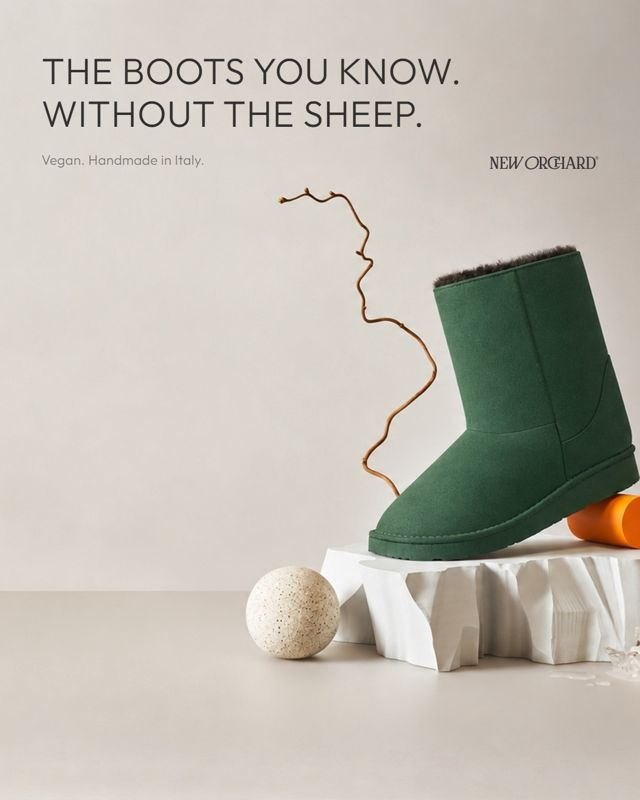
Zielone, EN5 koszyków za 16 €
30 kliknięć · CTR 3,8 %
Pierwszy tydzień reklam. Sklep sprzedał w tym tygodniu najwięcej od półtora miesiąca, a reklama daje dwa razy więcej koszyków niż rok temu w tym samym tygodniu. Poniżej wszystko, co zrobiliśmy, ile to kosztowało i co proponujemy dalej.
Ten sam tydzień w 2025 (6–12.10) kontra teraz. Sprzedaż według Google Analytics, reklama według Meta.
Ostatnie 5 tygodni w sklepie. Reklamy ruszyły w poniedziałek 5.10.
Wszystkie 5 zamówień tygodnia. Razem 7 par butów i kapci, 7 koszulek i akcesoria.
 Rękawiczki Black
Rękawiczki Black 2× Short Black
2× Short Black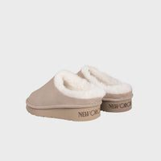
2× kapcie Sabbia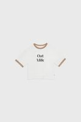
2× T-shirt Oat Milk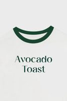
2× Avocado Toast2× Vegan Chocolate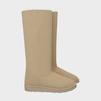
Long Beige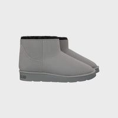
Short Grey −30 %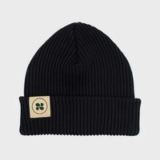
Czapka Black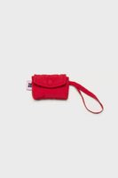
Saszetka Red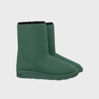
Medium Green −33 %Wnioski: największe zamówienie zrobił stały klient po mailu, a nowa osoba z Austrii kupiła z kodem z pop-upu. Przeceny działają: 2 pary były z outletu (Short Grey, Medium Green).
Dzień po dniu, w skrócie.
Ile poszło na każdą kampanię i co z tego wyszło.
| Kampania | Wydane | Kliknięcia | Koszyki | Koszt koszyka |
|---|---|---|---|---|
| Meta · DE+AT · linia 1 i 2 | 234 € | 233 | 8 | 29 € |
| Meta · Medium Green −33 % | 68 € | 51 | 3 | 23 € |
| Meta · 8 krajów po angielsku najlepsza | 34 € | 55 | 5 | 7 € |
| Meta · SALE (Twoje przeceny) | 58 € | 31 | 2 | 29 € |
| Google · wyszukiwarka DE+AT | 60 € | 79 | 0 | – |
| Google · wyszukiwarka EN | 24 € | 30 | 0 | – |
Ludzie klikają w reklamy chętnie: w Meta ponad 2,5 raza częściej niż rok temu, w Google co 16. osoba, która zobaczy reklamę. Rok temu w sezonie koszyk z reklamy w Niemczech kosztował średnio 42 €, teraz 22 €.



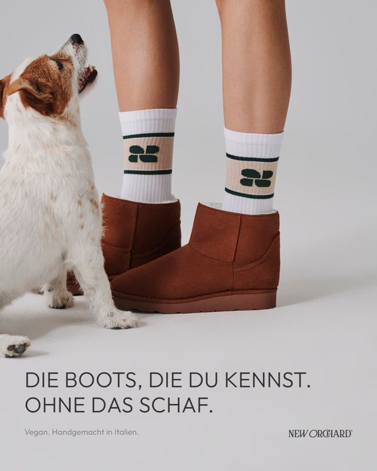
8 publikacji w tygodniu. Razem 1 673 osoby zasięgu i 133 polubienia. Najlepiej poszła rolka z Marche.
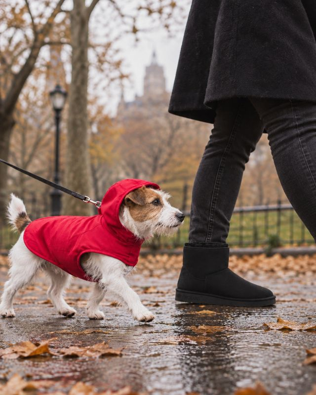
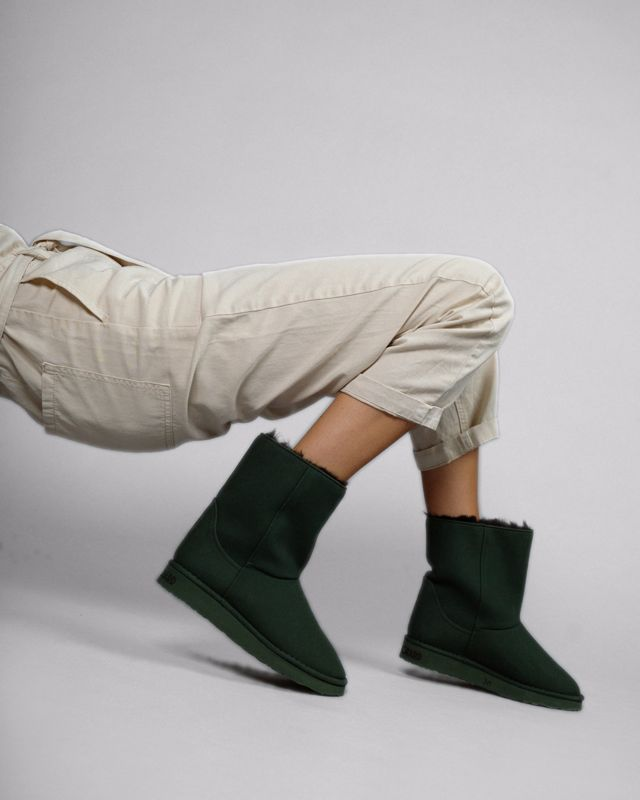
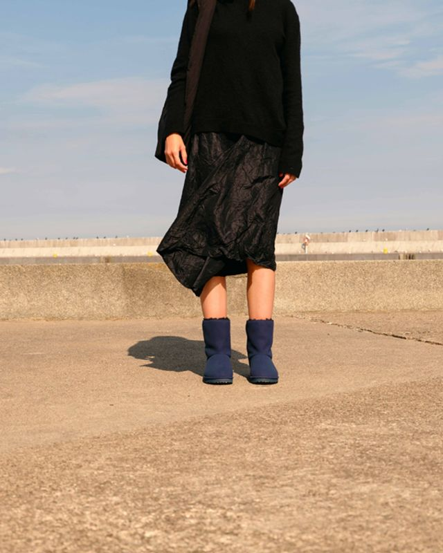
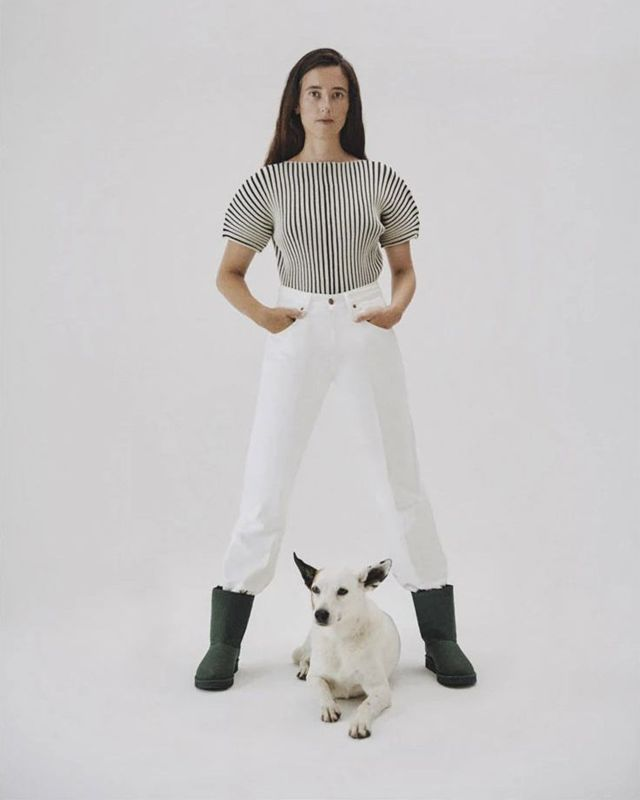
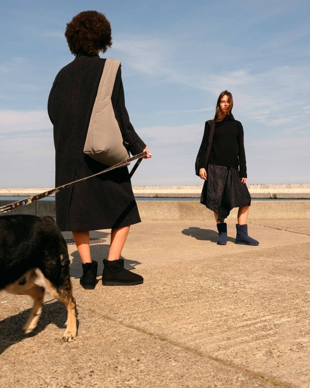
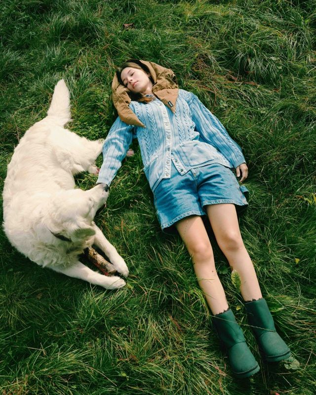
Do tego stories (ankieta „39 czy 40”, pytanie o rozmiar, „Short won”) i pierwsza rolka z rozpakowaniem butów (unboxing).
W tym tygodniu maile do Twojej bazy sprzedały najwięcej.
| Wysłane | Otwarte | Zamówienia | |
|---|---|---|---|
| Mail sezonowy · 6.10 | 1 118 | 45 % | 1 · 1 985 € |
| Medium Green −33 % EN · 9.10 | 964 | 39 % | 1 · 254 € |
| Medium Green −33 % DE · 9.10 | 130 | 33 % | 0 |
| Powitanie z kodem −10 % (automat) | 23 | 57 % | 2 · 237 € |
| Porzucony koszyk i kasa (automat) | 25 | 56 % | 0 |
Otwieralność 39–45 % to bardzo dobry wynik. Pop-upy −10 % zebrały w miesiącu 23 nowe adresy. Lista niemiecka ma 184 osoby.
Sprzedaż tydzień po tygodniu w sezonie 2025 (Google Analytics). Najlepszy tydzień to Green Week −40 %.
W zeszłym roku tydzień z −40 % przyniósł 5 217 €, czyli 44 razy więcej niż zwykły październikowy tydzień. Potrzebujemy dat, wersji kreacji i zgody na mail do subskrybentów dzień wcześniej.
Maile sprzedały w tym tygodniu najwięcej. Proponujemy jeden mail tygodniowo (nowości, outlet, historia marki) i nowe teksty porzuconego koszyka po niemiecku i angielsku, bo obecne nie przynoszą zamówień.
Na stronie „dziękujemy” krótkie pytanie „Skąd o nas wiesz?” (Instagram, Google, znajomi). Wtedy zobaczymy źródło także u osób, które nie zgodziły się na cookies.
Kraje anglojęzyczne dają koszyk za 7 €, Niemcy za 29 €. Przesunęliśmy już 10 € dziennie na kraje EN, łączny budżet bez zmian.
Kończą się kampanie linii 1+2 w DE i Medium Green −33 %. Proponujemy przedłużyć tylko reklamy, które dały koszyki, a resztę zastąpić nowymi kreacjami.
Dane: Meta Ads, Google Ads, Google Analytics, Shopify, Klaviyo, Instagram. Stan na 11.10.2026, wieczór. Przygotowanie: ZOVU.